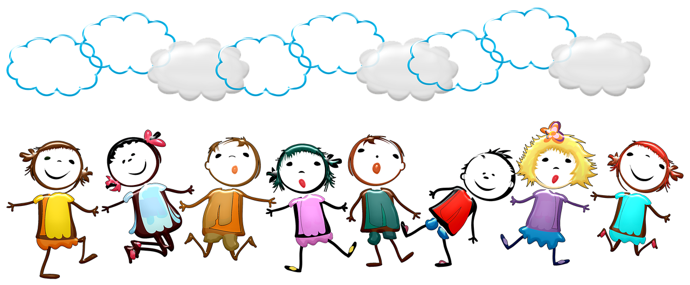

Kids Club
Come and join us at our kid club where you will take part in many activities such as animal facepainting and washing animals.
Our different clubs are fille with different activities at different parts of the zoo. Each Club comes with its own unique face mask and t-shirt to make you feel part of the pride, pack, flock, school or heard!
- Tiger Cubs
- Ocean Club
- Monkey Club
The Tiger Club siginiture colour is orange. With a tiger face mask. The tiger club has wonderful activties such as
The Ocean Club signiture colour is blue. We have lovely octopus face masks and participate mostly in water activities such as swimming and water slides.
The Monkey club loves to clim and explore. We have amazing rock climbing activities for our members
